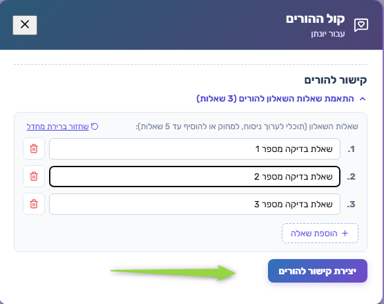
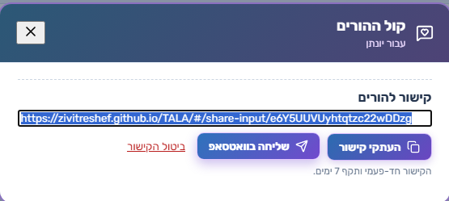
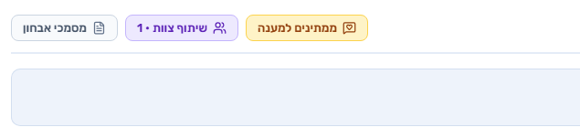
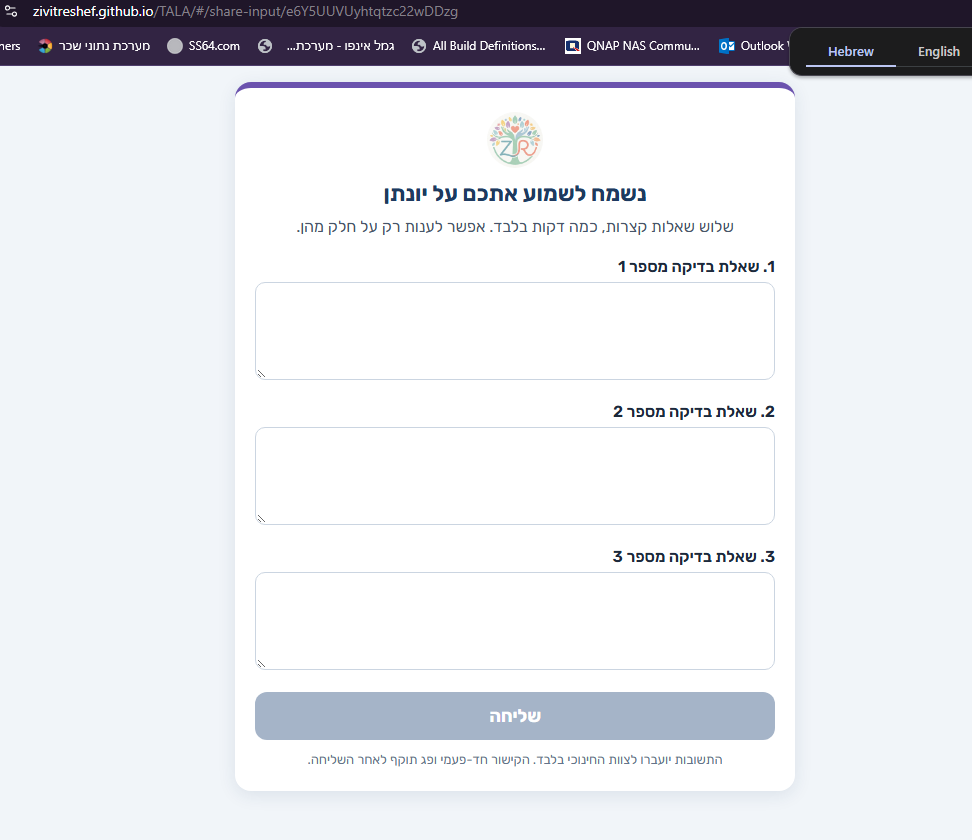
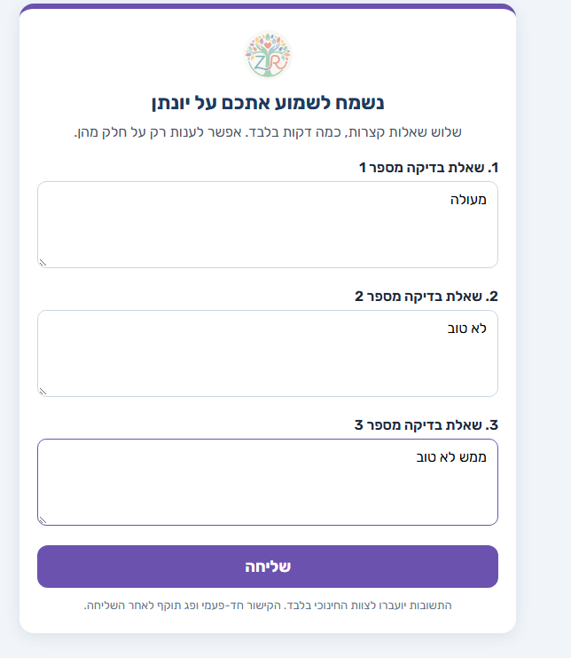
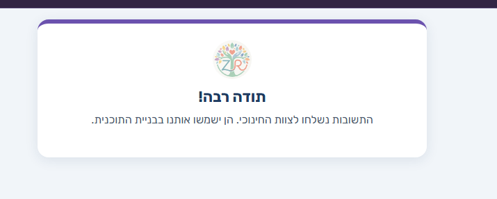
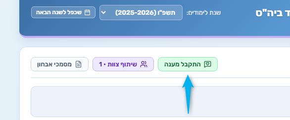
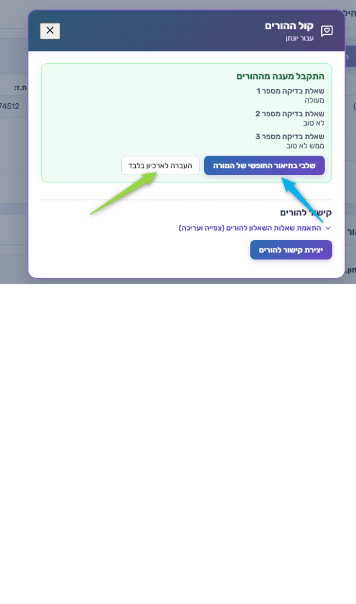

שלב 1 התאמת שאלות ויצירת קישור
15:44:31
במסך קול ההורים (עבור יונתן) נפתח אזור קישור להורים.
- עריכת ניסוח השאלות, מחיקה או הוספה (עד 5)
- אפשרות שחזור ברירת מחדל
- לחיצה על יצירת קישור להורים

תהליך שליחת שאלון להורים וקבלת מענה · לפי צילומי מסך (05.11.2026)
דוגמה: תלמיד — יונתן · שנת לימודים תשפ״ו (2025–2026)
| שלב | שעה | מי | מה קורה |
|---|---|---|---|
| 1 | 15:44:31 | צוות | התאמת שאלות ויצירת קישור |
| 2 | 15:44:47 | צוות | העתקה / שליחה בוואטסאפ |
| 3 | 15:45:05 | מערכת | סטטוס «ממתינים למענה» |
| 4 | 15:45:31 | הורה | פתיחת השאלון |
| 5 | 15:45:49 | הורה | מילוי תשובות |
| 6 | 15:45:57 | הורה | אישור שליחה |
| 7 | 15:46:06 | מערכת | סטטוס «התקבל מענה» |
| 8 | 15:46:18 | צוות | צפייה במענה והחלטה: לתאר / לארכב |
15:44:31
במסך קול ההורים (עבור יונתן) נפתח אזור קישור להורים.

15:44:47
נוצר קישור חד־פעמי (תקף ל־7 ימים).

15:45:05
בכרטיס התלמיד מוצג כפתור סטטוס ממתינים למענה (צהוב), לצד שיתוף צוות ומסמכי אבחון.

15:45:31
ההורה נכנס לקישור (מסך share-input).

15:45:49
ההורה ממלא את השדות ולוחץ שליחה.

15:45:57
מסך תודה: התשובות נשלחו לצוות החינוכי וישמשו בבניית התוכנית.

15:46:06
בכרטיס התלמיד הסטטוס מתחלף ל־התקבל מענה (ירוק).

15:46:18
במסך קול ההורים מוצג המענה מההורים.

כללי קישור: חד־פעמי · תקף ל־7 ימים · פג תוקף לאחר שליחה.
צוות: התאמת שאלות → יצירת קישור → שיתוף
↓
מערכת: ממתינים למענה
↓
הורה: פתיחה → מילוי → שליחה → תודה
↓
מערכת: התקבל מענה
↓
צוות: צפייה → שילוב בתיאור / ארכיון